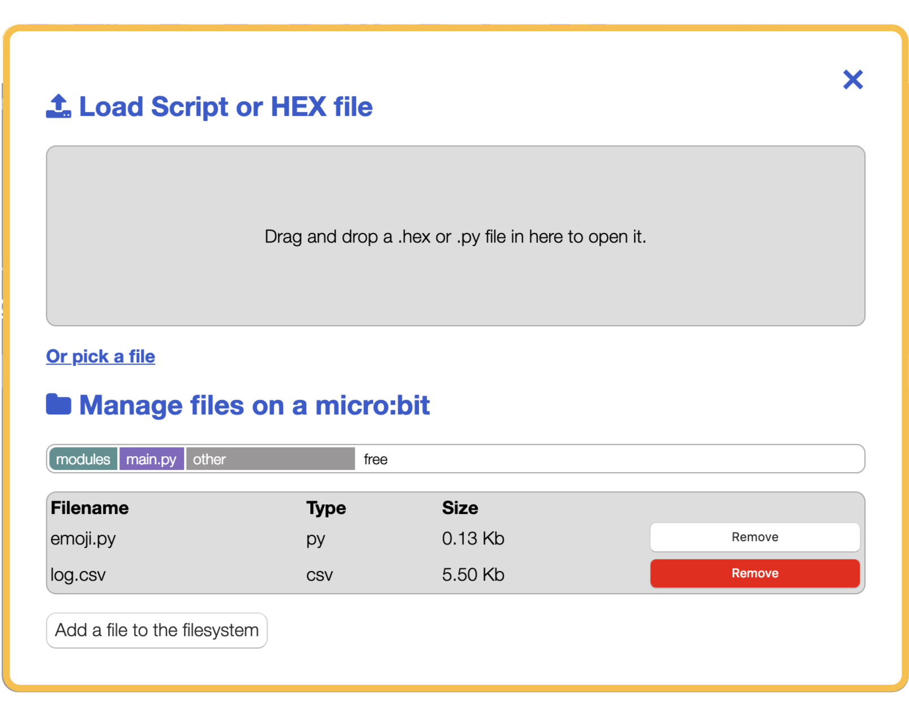

The Python editor is perfect for those who want to push their coding skills further. A selection of snippets and a range of pre-made images and music give you a helping hand with your code. The editor is powered by the global Python Community.
The main menu of the editor contains various buttons that allow you to interact with the editor and the micro:bit device. If you have additional features enabled in the editor, for example WebUSB you may see extra buttons availble in this menu.

As well as using a mouse, you can use the TAB key to navigate through the options and Enter to activate them. If you're in the text window, The ESC key will re-focus on the menu.
|
|
Click on the "Download" button to save a special "hex" file on computer. Plug in BBC micro:bit (it'll show up as USB storage) and drag the newly saved file onto the device. Code will run (or you'll see an error message scroll past on the device's display). See below for how to extract code from a hex file back into the editor. |
|
|
Click on the "Save" button to save the code onto your computer. Because you're downloading Python code computer might check you want to save the file. It's trying to protect you from downloading random software from the internet. But since this is own code you're safe to proceed. See below for how to load code back into the editor. |
|
|
It's very easy to load files from computer into the editor:
click the load button then drag the file from computer onto
the grey "drop" area. Alternatively, you could use the file
picker (just click on the link at the bottom to toggle between the
two options). The editor knows how to read Python files (whose name
ends with ".py") and extract Python code from hex files (whose name
ends with ".hex"). The file system adds functionality to add or remove python modules, data logs and other file types from the micro:bit. |
|
|
Clicking on the "Help" button gets you here. But you knew that already, right..? :-) Notice that editor is still available but in a separate tab in browser. |
|
|
Everyone likes to show off their awesome Python skills. These buttons are especially useful to zoom-in and zoom-out when you're trying to show code to a large group of people via a projector. |
The name and description for your script is shown on the top right hand side. Click them to edit them.
The other part of the editor is the text window, where we edit our scripts.

The editor tries to help out by colouring the text to show what all the different parts of program are. For example, Python keywords (words built into the Python language) are grey. The brighter coloured words are bits of the program you have created. Brown words are constant values that never change and purple words represent strings of characters to display. All the lines are numbered with the current line highlighted.
A 'Hello, World!' program is traditionally used as a quick test to see if we've got our software or hardware configured correctly.

Here's how we do this in the Python editor:
from microbit import *
display.scroll("Hello, World!")The first line (from microbit import *) tells MicroPython
to get all the bits of Python needed to program the micro:bit.
The second line (display.scroll("Hello, World!")) tells
MicroPython to use one of those bits of Python (the display
module) to scroll the text, "Hello, World!" across the physical
display on the front of the device.

When you load the Python editor in your browser, this is the default script you will see, asking the micro:bit to scroll the words across the LED screen and then display an image of a heart.
Why not try making the micro:bit scroll your name?
When the micro:bit is flashed with MicroPython, it enables a simple file system to store files on device. Selecting the load button in the menu will bring up the files modal window.

In addition to using MicroPython's built-in-modules, you can use the file system to include the external python modules in your program.
You can drag and drop files or use the Add a file to the filesystem button to open the file dialogue.
A status bar shows you the file types you have uploaded and how much free space you still have available. The file size shown is the space it consumes inside of the micro:bit file system, not the MICROBIT drive as this is emulated storage. The status bar is handily colour coded to indicate file types.
The main.py file is your program, the python script from the text window. It is pre-set in the status bar and cannot be removed. If you try to upload another main.py file this will replace your code in the text window.

As you add files, they will appear in a list underneath the status bar. The list indicates the filename, the file type (eg. py is a python script), the size of the file and also a button with the option to Remove the file if you have added it in error.
Things will go wrong!
You have to imagine Python is the most strict language teacher in the universe... yes, even more strict than that really strict one you have at school. Put simply, you have to type Python without any mistakes for it to work.
All programmers make mistakes and create bugs. It's a fact of life. When you have a bug MicroPython tries to help you out: it will scroll a message on its display. It may even include a line number.
Common bugs include Syntax Errors (which means you've typed it in wrong) and Name Errors (that mean you've typed in correct Python, but it can't work out what you're coding about).
If you're unsure what to do go read the MicroPython docs or open a support request with the micro:bit team.


The version of Python that runs on the BBC micro:bit is called MicroPython. It's exactly like real Python except it's designed to run on small devices like the BBC micro:bit. You can find out more about it on the MicroPython site and by reading the MicroPython for micro:bit reference.
To see how the editor actually works? It's easy, to view the "source code" press CTRL-U (or CMD-U on a Mac). There's a secret message for you in the code. Can you find it?
The code for the editor lives in a repository on Github. Github makes it easy to raise a bug report and contribute to the project. For example, here's the HTML code for this help page.
Python makes it simple to write powerful programs. Can you work out what this program does?
# Press button A for a fortune cookie.
from microbit import *
import random
fortunes = [
"Never step off a moving bus",
"This sentence is false",
"The meaning of life is overrated",
"Do not touch!",
"You will receive some advice",
"My hovercraft is full of eels",
]
while True:
if button_a.is_pressed():
cookie = random.choice(fortunes)
display.scroll(cookie)How could you improve it? What changes could you make?